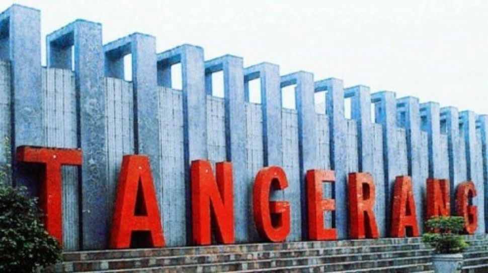

Sejarah
Kota Tangerang adalah kota yang terletak di Provinsi Banten, Indonesia. Kota ini terletak tepat di sebelah barat ibu kota Indonesia,
yaitu DKI Jakarta. Pada tahun 2021, jumlah penduduk kota Tangerang sebanyak 1.853.462 dengan kepadatan 12.041 jiwa/km2.
Tangerang merupakan kota terbesar di Provinsi Banten serta ketiga terbesar di kawasan Jabodetabek setelah Jakarta dan Bogor.
Selain itu kepolisian di kota ini juga setara dengan Jakarta, Depok, Tangerang Selatan dan Bekasi yang dimana kepolisiannya
berkedudukan di wilayah hukum Polda Metro Jaya dan wilayah pertahanan Kodam Jaya.
Website Kota Tangerang adalah https://tangerangkota.go.id/
Asal-Usul Tangerang disebut juga sebagai Kota "Benteng"

Untuk mengungkapkan asal usul Tangerang sebagai Kota Benteng, diperlukan catatan yang menyangkut perjuangan. Menurut tulisan
F. de Haan yang diambil dari arsip VOC, resolusi tanggal 1 Juni 1660 melaporkan bahwa Sultan Banten telah membuat negeri besar yang
terletak di sebelah barat Sungai Untung Jawa, dan untuk mengisi negeri baru tersebut Sultan Banten telah memindahkan 5.000 sampai
6.000 penduduk.
Dalam Dag Register tertanggal 20 Desember 1668 diberitakan bahwa Sultan Banten telah mengangkat Raden Sena Pati dan Kyai Demang
sebagai penguasa di daerah baru tersebut. Karena dicurigai akan merebut kerajaan, Raden Sena Pati dan Kyai Demang dipecat oleh Sultan.
Sebagai gantinya diangkat Pangeran Dipati lainnya. Atas pemecatan tersebut, Ki Demang sakit hati. Kemudian tindakan selanjutnya ia
mengadu domba antara Banten dan VOC. Tetapi ia terbunuh di Kademangan.
Dalam arsip VOC selanjutnya, yaitu dalam Dag Register tertanggal 4 Maret 1680 menjelaskan bahwa penguasa Tangerang pada waktu itu
adalah Kyai Dipati Soera Dielaga. Kyai Soeradilaga dan putranya Subraja minta perlindungan VOC dengan diikuti 143 pengiring dan
tentaranya. Ia dan pengiringnya ketika itu diberi tempat di sebelah timur sungai, berbatasan dengan pagar VOC.
Ketika bertempur dengan Banten, Soeradilaga beserta ahli perangnya berhasil memukul mundur pasukan Banten. Atas jasa keunggulannya itu kemudian ia diberi gelar kehormatan Raden Aria Suryamanggala, sedangkan Pangerang Subraja diberi gelar Kyai Dipati Soetadilaga.
Selanjutnya Raden Aria Soetadilaga diangkat menjadi Bupati Tangerang I dengan wilayah meliputi antara Sungai Angke dan Sungai Cisadane. Gelar yang digunakannya adalah Aria Soetidilaga I.
Salah satu pasal dari perjanjian tersebut berbunyi: Dan harus diketahui dengan pasti sejauh mana batas-batas daerah kekuasaan yang sejak masa lalu telah dimaklumi maka akan tetap ditentukan yaitu daerah yang dibatasi oleh Tangerang dari Pantai Laut Jawa hingga pegunungan-pegunungan sampai Laut Selatan. Bahwa semua tanah disepanjang Tangerang akan menjadi milik atau ditempati VOC.
Dengan adanya perjanjian tersebut daerah kekuasaan bupati bertambah luas sampai sebelah barat sungai Tangerang. Untuk mengawasi Tangerang maka dipandang perlu menambah pos-pos penjagaan di sepanjang perbatasan sungai Tangerang, karena orang-orang Banten selalu melakukan penyerangan secara tiba-tiba.
Menurut peta yang dibuat pada tahun 1692, pos yang paling tua terletak di muara Sungai Cisadane, tepatnya disebelah utara Kampung Baru. Namun kemudian ketika didirikan pos yang baru, bergeserlah letaknya ke sebelah Selatan atau tepatnya di muara Sungai Tangerang.
Menurut arsip Gewone Resolutie Van hat Casteel Batavia, tanggal 3 April 1705 ada rencana merobohkan bangunan-bangunan dalam pos karena hanya berdinding bambu. Kemudian bangunannya diusulkan diganti dengan tembok. Gubernur Jenderal Zwaardeczon sangat menyetujui usulan tersebut, bahkan diinstruksikan untuk membuat pagar tembok mengelilingi bangunan-bangunan dalam pos penjagaan.
Hal ini dimaksudkan agar orang Banten tidak dapat melakukan penyerangan. Benteng baru yang akan dibangun untuk ditempati itu direncanakan punya ketebalan dinding 20 kaki atau lebih. Disana akan ditempatkan 30 orang Eropa dibawah pimpinan seorang Vandrig dan 28 orang Makassar yang akan tinggal di luar benteng. Bahan dasar benteng adalah batu bata yang diperoleh dari Bupati Tangerang Aria Soetadilaga I.
Setelah benteng selesai dibangun personelnya menjadi 60 orang Eropa dan 30 orang hitam. Yang dikatakan orang hitam adalah orang-orang Makassar yang direkrut sebagai serdadu VOC. Benteng ini kemudian menjadi basis VOC dalam menghadapi pemberontakan dari Banten.
Kemudian pada tahun 1801, diputuskan untuk memperbaiki dan memperkuat pos atau garnisun itu, dengan letak bangunan baru 60 meter agak ke tenggara, tepatnya terletak disebelah timur Jl. Besar PAL 17. Orang-orang pribumi pada waktu itu lebih mengenal bangunan ini dengan sebutan "Benteng".
Sejak saat itu, Tangerang terkenal dengan sebutan Benteng. Benteng ini sejak tahun 1812 sudah tidak terawat lagi, bahkan menurut "Superintendant of Publik Building and Work" tanggal 6 Maret 1816 menyatakan:
... Benteng dan Barak di Tangerang sekarang tidak terurus, tak seorangpun mau melihatnya lagi. Pintu dan jendela banyak yang rusak bahkan diambil orang untuk kepentingannya.
Perjuangan Kemerdekaan
Pada Oktober 1945, Laskar Hitam, milisi muslim ekstrem didirikan di Tangerang. tujuan dari gerakan ini adalah untuk mendirikan negara Islam di Indonesia. Gerakan ini kemudian menjadi bagian kelompok pemberontak DI/TII. Pada 31 Oktober 1945, Laskar Hitam menculik Oto Iskandardinata, Menteri Negara Republik Indonesia. Kemungkinan dibunuh di Mauk, Tangerang pada 20 Desember 1945.
Setelah deklarasi kemerdekaan Indonesia, ada kerusuhan ras di Tangerang. Kelompok anti etnis Tionghoa menyerang etnis Tionghoa di Tangerang karena mereka menganggap bahwa etnis Tionghoa mendukung pemerintah Belanda yang mencoba untuk kembali menguasai Indonesia.
Setelah Kemerdekaan Indonesia
Sejak tahun 1981 hingga 1984, Bandara Internasional Soekarno-Hatta dibangun di Benda, Tangerang. Bandara terletak di Tangerang, namun disebut sebagai Bandara Cengkareng. Cengkareng adalah nama kecamatan di Jakarta Barat yang berdekatan dengan bandara.
Pada Agustus 1996, Walmart, pengecer terbesar dari Amerika Serikat membuka cabang pertamanya di Indonesia di Lippo Karawaci, Tangerang. Sayangnya, cabang tersebut dijarah dan dibakar pada Peristiwa Mei 1998. Walmart menghentikan investasi mereka di Indonesia setelah kerusuhan.
Geografi

Kota Tangerang terletak di wilayah barat laut Provinsi Banten dan berada di sisi utara Pulau Jawa. Secara astronomis, kota ini terletak 106°33' - 106°44' BT dan 6°05'–6°15 LS. Kota Tangerang mempunyai luas sebesar ±153,9 km².
Kota ini berbatasan dengan Kabupaten Tangerang di sebelah Barat dan Utara, dengan Kota Tangerang Selatan di sisi Selatan, dan dengan DKI Jakarta di sebelah Timur.
Kota Tangerang dilintasi oleh salah satu sungai terbesar di barat Pulau Jawa yaitu Sungai Cisadane. Sungai ini merupakan bagian dari identitas Kota Tangerang yang tak dapat dipisahkan. Hulu sungai ini terletak di lereng Gunung Salak dan Gunung Pangrango, Bogor.
Topografi
Secara topografi, Kota Tangerang sebagian besar berada pada ketinggian 10-30 mdpl, alias secara keseluruhan wilayahnya berada di dataran rendah. Bagian utara kota ini (meliputi sebagian besar Kecamatan Benda) memiliki ketinggian rata-rata 10 mdpl, sedangkan bagian selatan Kota Tangerang mempunyai ketinggian 30 mdpl.
Selanjutnya, Kota Tangerang mempunyai tingkat kemiringan tanah 0-3% dan sebagian kecil (yaitu di bagian selatan kota) kemiringan tanahnya antara 3%–8% berada di Parung Serab, Paninggilan dan Cipadu Jaya.
Daftar kecamatan dan kelurahan di Kota Tangerang
- Batuceper
- Benda
- Cibodas
- Ciledug
- Cipondoh
- Jatiuwung
- Karang Tengah
- Karawaci
- Larangan
- Neglasari
- Periuk
- Pinang
- Tangerang
Tangerang adalah pusat manufaktur dan industri di Pulau Jawa dan memiliki lebih dari 1000 pabrik. Banyak perusahaan-perusahaan Internasional yang memiliki pabrik di kota ini. Tangerang memiliki cuaca yang cenderung panas dan lembap, dengan sedikit hutan atau bagian geografis lainnya. Kawasan-kawasan tertentu terdiri atas rawa-rawa, termasuk kawasan di sekitar Bandara Internasional Soekarno-Hatta.
Dalam beberapa tahun terakhir, perluasan urban Jakarta meliputi Tangerang, dan akibatnya banyak penduduknya yang berkomuter ke Jakarta untuk kerja, atau sebaliknya. Banyak kota-kota satelit kelas menengah dan kelas atas sedang dan telah dikembangkan di Tangerang, lengkap dengan pusat perbelanjaan, sekolah swasta dan mini market. Pemerintah bekerja dalam mengembangkan sistem jalan tol untuk mengakomodasikan arus lalu lintas yang semakin banyak ke dan dari Tangerang. Tangerang dahulu adalah bagian dari Provinsi Jawa Barat yang sejak tahun 2000 memisahkan diri dan menjadi bagian dari Provinsi Banten.
Pendidikan

Kota Tangerang memiliki sekitar 1.623 sekolah, 256.361 siswa dan 38.527 guru.
Perguruan Tinggi yang ada di Tangerang
- Universitas Bina Nusantara
- Universitas Buddhi Dharma
- Universitas Bunda Mulia
- Universitas Pelita Harapan
- Universitas Internasional Swiss German
- Universitas Islam Syekh Yusuf Tangerang
- Universitas Muhammadiyah Tangerang
- Politeknik Gajah Tunggal
- Politeknik Kesehatan Banten
- Sekolah Tinggi Agama Buddha Dharma Widya
- Sekolah Tinggi Agama Buddha Sriwijaya
- Sekolah Tinggi Agama Islam Asy-Syukriyah
- Sekolah Tinggi Ilmu Ekonomi Lepisi
- Sekolah Tinggi Ilmu Pelayaran Al-Husna
- Sekolah Tinggi Ilmu Sosial dan Ilmu Politik Yuppentek
- Sekolah Tinggi Manajemen Informatika dan Komputer Bina Sarana Global
- Sekolah Tinggi Manajemen Informatika dan Komputer Dharma Putra
- Sekolah Tinggi Manajemen Informatika dan Komputer Masa Depan
- Sekolah Tinggi Manajemen Informatika dan Komputer PGRI
- Sekolah Tinggi Manajemen Informatika dan Komputer Raharja
- Sekolah Tinggi Teknik Yuppentek
Kesehatan

Daftar Rumah Sakit di Kota Tangerang
- RSUD Kota Tangerang
- RSUD Kabupaten Tangerang
- RS An-Nisa Tangerang
- RS Aqidah Parung Serab
- RS Ariya Medika
- RS Daan Mogot
- RS Dinda
- RS EMC Tangerang
- RS Hermina Tangerang
- RS Hermina Periuk
- RS Karang Tengah Medika
- RS Mayapada
- RS Melati
- RS Mulya
- RS Permata Ibu
- RS Primaya Tangerang
- RS Sari Asih Ar-Rahmah
- RS Sari Asih Ciledug
- RS Sari Asih Karawaci
- RS Sari Asih Sangiang
- RS Tiara
- RSIA Gebang Medika
- RSIA Karunia Bunda
- RSIA Keluarga Ibu
- RSIA Makiyah
- RSIA Muhammadiyah Cipondoh
- RSIA Mutiara Bunda Tangerang
- RSIA Pratiwi
- RSU Aminah
- RSU Bhakti Asih
- RSUP Dr. Sitanala
Stasiun
Daftar Stasiun kereta di Kota Tangerang
- Stasiun Tangerang
- Stasiun Tanah Tinggi
- Stasiun Batuceper
- Stasiun Poris
Pariwisata
Wisata belanja
Tangerang memiliki banyak pusat perbelanjaan. Mulai dari yang sederhana hingga yang mewah.
Pusat jajanan rakyat yang cukup dikenal adalah pasar lama yang terletak di pusat Kota Tangerang. Pasar lama menjual berbagai makanan mulai dari daerah Babakan sampai daerah Masjid Agung Tangerang. Kawasan ini memiliki berbagai varian jajanan. Ketika Ramadhan, kawasan ini setiap sore hari kerap ramai pengunjung karena mencari hidangan untuk berbuka puasa.
Sebagai kawasan permukiman kaum urban, Kota Tangerang banyak memiliki pusat perbelanjaan, baik itu pasar tradisional, hypermarket, maupun pusat perbelanjaan mewah.
Beberapa pusat perbelanjaan (dalam bentuk mall) di Kota Tangerang antara lain:
- Bale Kota Mall Tangerang
- Tang City Mall
- Metropolis Town Square
- CBD Ciledug
- Mall @ Alam Sutera
Wisata kuliner
Kota Tangerang selain terkenal dengan pariwisatanya juga mempunyai banyak makanan khas. Beberapa tempat yang menjadi tempat wisata kuliner khas Tangerang terletak di Pasar Lama Tangerang. Beberapa makanan ini adalah khas peranakan China-Tangerang seperti asinan, otak-otak, babi panggang, sate babi, mi pasar lama, laksa tangerang, bebek tim (babi kecap), bakcang, kecap benteng, dan emping jengkol. Kuliner khas lainnya adalah Tenda dua Cobra dan Tenda Tiga Sekawan yang menyajikan sate biawak, ular, dan monyet.
Berikut adalah beberapa makanan khas kota Tangerang di antaranya:
Sayur Besan
Sayur Besan adalah makanan khas Tangerang yang selalu dihidangkan pada saat orang tua mempelai laki-laki datang ke rumah orang tua mempelai wanita, pada acara perkawinan (ngabesan), sehingga sayur ini dinamakan Sayur Besan.
Gecom (Toge dan Oncom)
Gecom mungkin saat ini lebih terkenal dengan nama toge goreng.
Pindang Bandeng
Meskipun banyak durinya, ikan bandeng tetap diburu. Ini karena dagingnya yang gurih lembut mirip dengan rasa susu
Pindang merupakan salah satu istilah masakan tradisional yang mengacu pada hidangan berkuah. Hidangan sederhana ini berbumbu bawang merah, bawang putih, cabai, salam, lengkuas, jahe dan kunyit. Bumbu lain yang baisa ditambahkan adalah kecap manis dan rasa asamnya berasal dari belimbing sayur atau asam Jawa yang dibakar.
Kecap Benteng
Kecap Benteng terbuat dari bahan baku campuran kedelai hitam dan gula kelapa yang menyebabkan warna kecap manis menjadi hitam kecoklatan dan hitam legam. Produk ini merupakan hasil olahan warga Tangerang keturuna Tionghoa yang masuk ke Indonesia pada zaman dahulu dan mendirikan pabrik-pabrik kecil yang memproduksi kecap manis. Rasa manis kecap tersebut menjadikannya terkenal di kalangan penduduk Asia, khususnya Melayu yang menyukai rasa manis. Banyak masakan-masakan melayu-indonesia yang menggunakan kecap manis sebagai pelengkap dan bahkan unsur utama yang membuat masakan itu berbeda. Sebut saja seperti Sate Madura, Ketoprak, Gado-Gado, Nasi maupun mie goreng, Soto Betawi, hingga hidangan laut yang biasa disajikan dengan cara dibakar
Tangerang merupakan cikal bakal produk kecap manis terkenal yang sekarang umum di pasaran. Hal ini tak lepas dari peran kaum etnis tionghoa benteng (Cina Benteng) yang menetap di daerah Tangerang. Lewat mereka lahirlah usaha-usaha produksi kecap dan salah satunya adalah Kecap Benteng (Siong Hin) yang telah eksis sejak tahun 1920. Kecap Benteng SH dipelopori oleh seorang etnis keturunan Tionghoa Peranakan yang bernama Lo Tjit Siong yang hingga kini usaha Kecap Benteng SH yang didirikannya telah dilanjutkan oleh generasi ke-4 dan masih digemari oleh masyarakat Kota Tangerang.
Laksa Tangerang
Laksa Tangerang berbeda dengan laksa betawi atau malaysia. Laksa disini bahan utamanya adalah semacam bihun tetapi tebalnya seperti spaghetti dan terbuat dari beras. Kemudian bahan-bahan ini disiram dengan kuah laksa yang dimasak dari kacang ijo, kentang, santan dan kaldu ayam. Selain itu disediakan juga tambahan daging ayam kampung atau telor. Sebelum disajikan masakan ini diberi taburan daun kucai yang dirajang kecil-kecil.
Ada dua macam jenis laksa tangerang yaitu Laksa nyai dan laksa nyonya. Laksa Nyai dibuat oleh kaum pribumi tangerang sedangkan laksa nyonya dibuat oleh kaum peranakan China di Tangerang. Beberapa tempat menyajikan sajian khas ini seperti di Jl. M. Yamin-Kota Tangerang, tepatnya di depan penjara wanita.